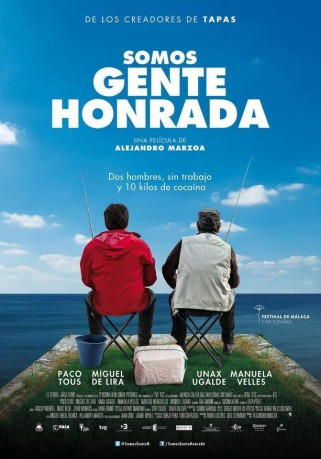

IMDB-Wertung: 5.5 / 10
IMDB-Wertung: 5.5 / 10  Metascore:
Metascore: 
Suso and Manuel, two unemployed fifty years old, lifetime friends and family fathers, find a package with ten cocaine's kilograms.
Alternativ: Here's the Deal (Englischer Titel)
 IMDB-Wertung: 5.5 / 10 Metascore:
Suso and Manuel, two unemployed fifty years old, lifetime friends and family fathers, find a package with ten cocaine's kilograms.
Jahr: 2013
Dauer: 88 Minuten
FSK:
Land: Spanien Studio: Filmax InternationalTonspuren:
Untertitel:
Auflösung: 1080p (1920x800) Größe: 2826 MB
Genre: Komödie
Regisseur: Alejandro Marzoa
Drehbuch: Miguel Ángel Blanca, Juan Cruz, Alejandro Marzoa, Jaume Ripoll
Soundtrack: Sergio Moure
Darsteller:
 Unax Ugalde als Luis
Unax Ugalde als LuisDatei: X:\NEU\Ganz grosse Fang, Der (2013, FSK, 1920x800).mkv seit 01.10.2019
 Es gibt insgesamt 187 Filme in der Gruppe 'NEU'
Es gibt insgesamt 187 Filme in der Gruppe 'NEU'